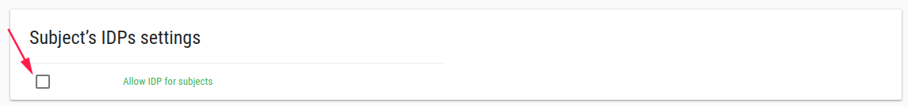

Features
In order to manage customer features, click on Features in the left bar.

There are a few available features.
Forms
To add/remove Forms from the left bar - add/delete it from your customer features.
If this feature is turned on, the Form designer field will be added to user edit

If you mark the Form designer option, this user can enter to Flask Forms and modify CRFs, Events, etc.
By default only Customer admin users can enter to Flask Forms.
Create user in EDC
This feature related to study with EDC DB. It creates user in EDC when you create user in Flask.
Enrollment target popup notification
Each study has an Enrollment Target value.
The popup feature displays a warning message when user add subject that exceeds the enrollment target number.
Monthly billing report for Customer Administrator
This feature sends billing report each month (at the end of the month) to customer admin user via their email.
Monthly billing report for PI
This feature sends billing report in each month (at the end of the month) to the PI user via their email.
One click add subject
Add subject with one click on the ADD SUBJECT button
This feature creates a subject without a real email or phone number.
If study has PRO then this feature is not supported.
If CRC user is assigned to 2 sites or more, then this feature is not supported (the user should check the relevant site).
This feature relates to the Subject Label Calculation feature.
Subject Label Calculation
This feature adds subjects with an automatic label number.
Subject Prefix * Prefix Subject label can be defined to start with study unique protocol id or site unique identifier * Prefix mask is the number of numbers after the Prefix
Example
Prefix = Site unique identifier, Prefix mask = NNN, subjects label seems like site01-001, site1-002 etc.
Important
If you have an existing study, go to study edit to define the subject prefix calculation node.
Info
You can change the subject numerator to specific site/study.
If you define your study subject prefix to "site unique identifier",
You can go to site edit or site add and change the Starting subject ID to the desired number.
The next patient label will be with this number (SHEBA-024).

Subject Personal Information
This feature adds more fields to the add subject function.
- First name
- Last name
- ID Number/Passport
- Subject signed the ICF
IDP configuration
This feature allows you to add a GOOGLE Account to user, for customers that do not have their own IDPs like SAML or OpenId.
In add user and edit user you can define additional GOOGLE accounts to the user.
This feature allows the user to login to Flask with multiple GOOGLE accounts.

If you want to enable this feature to subjects too then you should define it in your study
